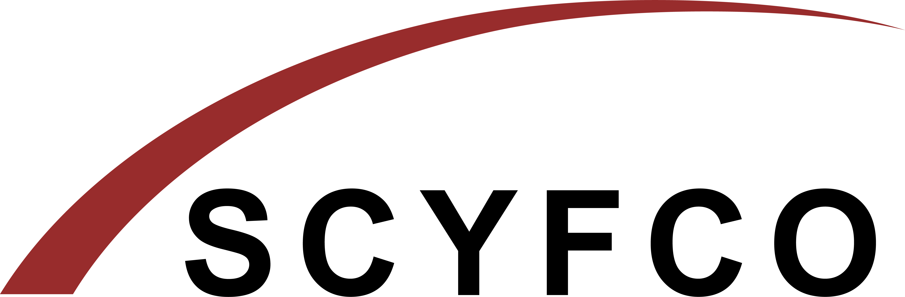
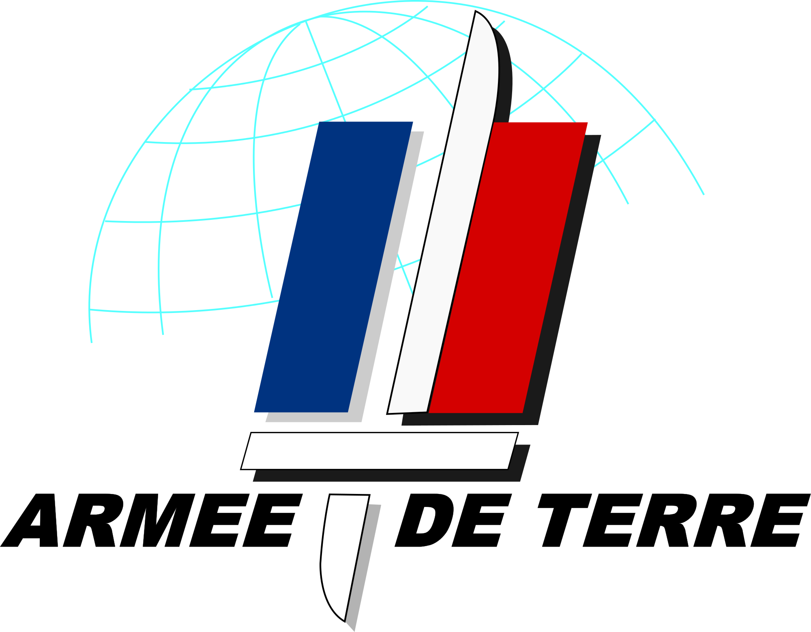
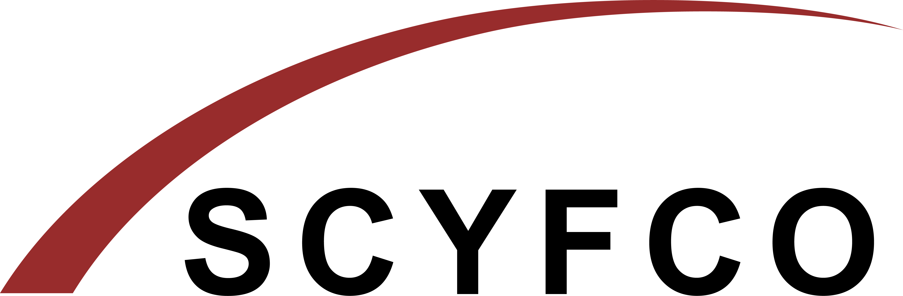
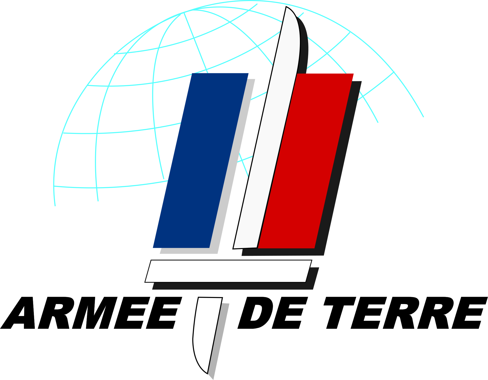
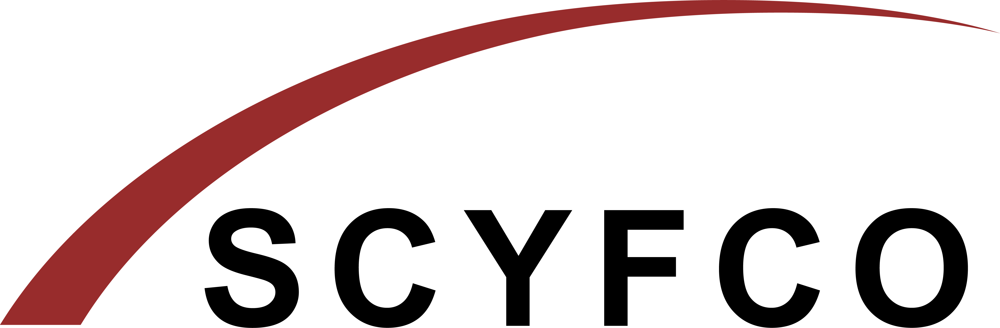
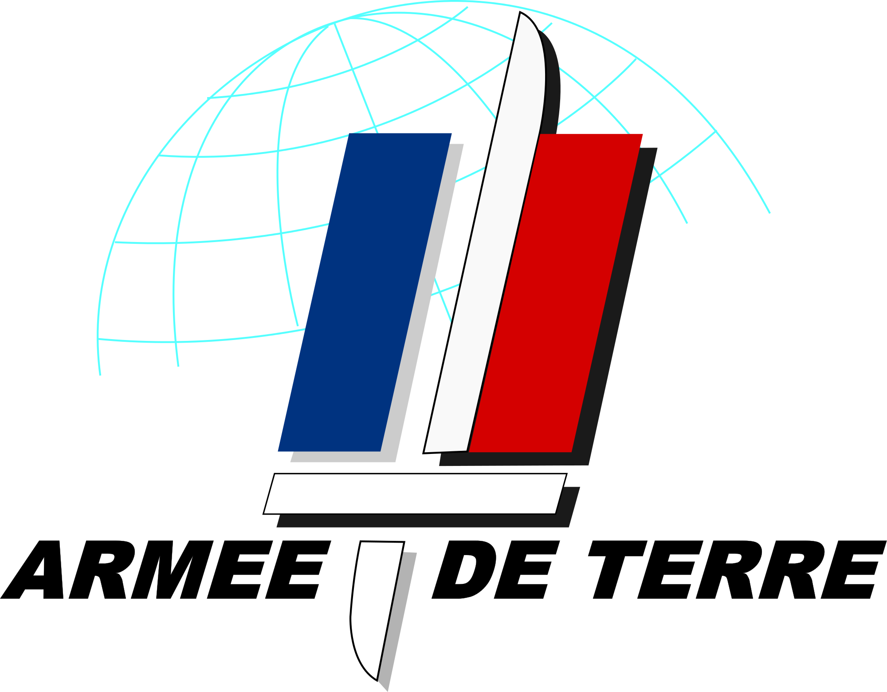

Formation
- ESIR : cycle universitaire préparatoire aux grandes écoles.
- Assomption : baccalauréat général mention très bien.
Expériences
Été 2022CDD Leclerc Drive ; Juin 2022Stage en Entreprise, WALLIX : dévellopement d'un API fuzzer en python ;
Juin 2022Stage en Entreprise, WALLIX : dévellopement d'un API fuzzer en python ; Octobre 2019Scyfco : aide à la logistique pendant une journée ;
Avril 2016Stage d'observation : École des transmissions de l'armée de Terre.
Octobre 2019Scyfco : aide à la logistique pendant une journée ;
Avril 2016Stage d'observation : École des transmissions de l'armée de Terre.
Juin 2022Stage en Entreprise, WALLIX : dévellopement d'un API fuzzer en python ;
Octobre 2019Scyfco : aide à la logistique pendant une journée ;
Avril 2016Stage d'observation : École des transmissions de l'armée de Terre.
Développement, projets personnels
- Shooter dans le style de DOOM, moteur de raycasting ;
- Bots discord, aide à la modération, musique dans les salons vocaux... ;
- Entrainement pour le SWERC (SouthWestern Europe Regional Contest), résolution de problèmes par la programmation ;
- Home server Minecraft, Plex server, NAS, hébergement du bot discord ;
- Petits sites web (cv, site sur le Rubik's Cube...) ;
- En apprentissage: framework Django, language Rust ;
Vie Associative - Loisirs
- Chef Scout - Organisation d'activité pédagogiques dans la nature pour des jeunes ayant entre 8 et 12 ans, à raison d'un WE sur 2;
- Modérateur Discord - Modération de messages ;
- Musculation et tennis ;
- Hardware et montage de PC.